library(readxl)
library(tidyverse)
library(ggcorrplot)
library(knitr)
library(rcartocolor)
library(patchwork)
library(tibble)
#PARA DIAGNOSTICO
library(car)
library(grpreg)
library(ggrepel)
library(qqplotr)
library(skedastic) ovejas
MODELOS LINEALES - PROYECTO FINAL
Librerías y paquetes
Data wrangling
Cargar datos
datos <- read_excel("datosoveja.xlsx", sheet = "Datos hasta señalada", na = "." )
#str(datos)
datos_preparto <- datos |> filter( Momento == "Preparto") Datos faltantes (NAs)
nrow(na.omit(datos_preparto)) #159 de 174 [1] 159nrow(na.omit(datos))[1] 216#Se eliminan las observaciones con NAs
datos_preparto <- na.omit(datos_preparto)Recodificación de variables
#datos_preparto$Tiponac[datos_preparto$Tiponac == "3"] <- 2
#Unificacion de categorias por desbalance (sin o con defecto ya no por escala)
datos_preparto <- datos_preparto |>
mutate(
Ubicpez = if_else(Ubicpez == 3, 2, Ubicpez),
Separ = if_else(Separ == 1,2, Separ),
Suspen = if_else(Suspen == 3, 1, Suspen),
Tiponac = ifelse(Tiponac == 3, 2, Tiponac)
)
#Transformamos las variables categoricas en factor
datos_preparto <- datos_preparto |>
mutate(Edad = as.factor(Edad),
Partos = as.factor(Partos),
Pesove = as.numeric(Pesove),
CCove = as.numeric(CCove),
LOTE = as.factor(LOTE),
Tiponac = as.factor(Tiponac),
Potrepari = as.factor(Potrepari),
Sex = as.factor(Sex),
Gainseñal = as.numeric(Gainseñal),
Nodu = as.factor(Nodu),
Induru = as.factor(Induru),
Nodpez = as.factor(Nodpez),
Indupez = as.factor(Indupez),
Eco = as.factor(Eco),
Ancubre = as.numeric(Ancubre),
Peznum = as.factor(Peznum),
Suspen = as.factor(Suspen),
Separ = as.factor(Separ),
Ubicpez = as.factor(Ubicpez),
Simet = as.factor(Simet) )
#str(datos_preparto)
#Variables con desbalance extremo
which(datos_preparto$Indupez == 1) #hay uno solo[1] 156which(datos_preparto$Nodpez == 1) #no hayinteger(0)#Eliminamos variables no relevantes para el analisis o por falta extrema de homegenidad en categorias
datos_preparto <- datos_preparto |>
dplyr::select(-PadCord, -PN, -Nodpez, -Indupez, -IDM, -Momento, -Idcord)#Renombre de los niveles
datos_preparto <- datos_preparto |>
mutate(
Partos = fct_recode(Partos,"Multipara" = "M","Primipara" = "P"),
LOTE = fct_recode(LOTE,"Inseminación artificial" = "IA",
"Repaso con carnero" = "R"),
Tiponac = fct_recode(Tiponac, "Simple" = "1","Múltiple" = "2"),
Sex = fct_recode(Sex,"Hembra" = "H","Macho" = "M"),
Nodu = fct_recode(Nodu, "Ausencia" = "0","Presencia" = "1"),
Induru = fct_recode(Induru,"Ausencia" = "0","Presencia" = "1"),
Eco = fct_recode(Eco,"Normal" = "0","Alteración" = "1"),
Peznum = fct_recode(Peznum, "Ausencia" = "0","Presencia" = "1"),
Suspen = fct_recode(Suspen,"No cuadrada" = "1",
"Cuadrada" = "2"),
Separ = fct_recode(Separ, "Con" = "2",
"Sin" = "3"),
Ubicpez = fct_recode(Ubicpez, "Lateral" = "1",
"No lateral" = "2"),
Simet = fct_recode(Simet, "Simétrica" = "0", "No simétrica" = "1")
)#Para graficar
cat_vars <- names(Filter(is.factor, datos_preparto))
num_vars <- datos_preparto |> dplyr::select(where(is.numeric)) |> names() |>
setdiff("Gainseñal")
nombres_cat <- c("Edad (cronología dentaria)",
"Número de partos",
"Manejo reproductivo",
"Tipo de nacimiento",
"Potrero",
"Sexo",
"Nodulos en ubre",
"Induración en ubre",
"Alteraciones ecograficas",
"Pezones supernumerarios",
"Suspensión ubre",
"Separación ubre",
"Ubicación pezones",
"Simetría ubre" )
nombres_num <- c("Peso de la oveja",
"Condición corporal de la oveja",
"Largo de ubre (cm)",
"Ancho de ubre (cm)",
"Ancho del pezon (cm)",
"Largo pezon (cm)")
paleta <- c("#fcde9c","#faa476","#f0746e","#e34f6f","#dc3977","#b9257a","#7c1d6f")
num_vars[1] "Pesove" "CCove" "Lagubre" "Ancubre" "Anchopez" "Largopez"Tabla de descripcion de variables
variables <- tibble(
Variable = c(
"Edad", "Partos", "Pesove", "CCove", "LOTE",
"Tiponac", "Potrepari", "Sex", "Gainseñal",
"Nodu", "Induru", "Eco", "Lagubre",
"Ancubre", "Anchopez", "Largopez", "Peznum",
"Suspen", "Separ", "Ubicpez", "Simet"
),
Descripción = c(
"Edad de la oveja",
"Número de partos",
"Peso de la oveja",
"Condición corporal de la oveja",
"Manejo reproductivo",
"Tipo de nacimiento",
"Potrero donde nació el cordero",
"Sexo del cordero",
"Ganancia media de peso diario del cordero hasta la señalada (g/d)",
"Nodulos en ubre",
"Induración en ubre",
"Alteraciones ecográficas",
"Largo de ubre (cm)",
"Ancho de ubre (cm)",
"Ancho del pezón (cm)",
"Largo del pezón (cm)",
"Número de pezones",
"Suspensión de la ubre",
"Separación de la ubre",
"Ubicación de los pezones",
"Simetría de la ubre"
),
`Tipo / Categorías` = c(
"DL, 2D, 4D, 6D, BL",
"Primípara, Multípara",
"Numérica (kg)",
"Numérica (1:muy flaca-5:muy gorda)",
"Inseminación artificial, Repaso con carnero",
"Simple, Múltiple",
"Chanchera, Embarcadero, Pradera",
"Hembra, Macho",
"Numérica",
"Ausencia, Presencia",
"Ausencia, Presencia",
"Normal, Alteración",
"Numérica",
"Numérica",
"Numérica",
"Numérica",
"Ausencia, Presencia",
"Ancha, Cuadrada, Pendulada",
"Marcada, Moderada, Sin",
"Lateral, Vertical, Horizontal",
"Simétrica, No simétrica"
)
)
kable(
variables,
caption = "Descripción de las variables utilizadas en el estudio.",
align = c("l", "l", "l"),
booktabs = TRUE
)| Variable | Descripción | Tipo / Categorías |
|---|---|---|
| Edad | Edad de la oveja | DL, 2D, 4D, 6D, BL |
| Partos | Número de partos | Primípara, Multípara |
| Pesove | Peso de la oveja | Numérica (kg) |
| CCove | Condición corporal de la oveja | Numérica (1:muy flaca-5:muy gorda) |
| LOTE | Manejo reproductivo | Inseminación artificial, Repaso con carnero |
| Tiponac | Tipo de nacimiento | Simple, Múltiple |
| Potrepari | Potrero donde nació el cordero | Chanchera, Embarcadero, Pradera |
| Sex | Sexo del cordero | Hembra, Macho |
| Gainseñal | Ganancia media de peso diario del cordero hasta la señalada (g/d) | Numérica |
| Nodu | Nodulos en ubre | Ausencia, Presencia |
| Induru | Induración en ubre | Ausencia, Presencia |
| Eco | Alteraciones ecográficas | Normal, Alteración |
| Lagubre | Largo de ubre (cm) | Numérica |
| Ancubre | Ancho de ubre (cm) | Numérica |
| Anchopez | Ancho del pezón (cm) | Numérica |
| Largopez | Largo del pezón (cm) | Numérica |
| Peznum | Número de pezones | Ausencia, Presencia |
| Suspen | Suspensión de la ubre | Ancha, Cuadrada, Pendulada |
| Separ | Separación de la ubre | Marcada, Moderada, Sin |
| Ubicpez | Ubicación de los pezones | Lateral, Vertical, Horizontal |
| Simet | Simetría de la ubre | Simétrica, No simétrica |
Análisis Univariado
Variable Respuesta: Ganancia media de peso diario
#Densidad
ggplot(datos_preparto, aes(x = Gainseñal)) +
geom_histogram(aes(y = after_stat(density)),
fill = "grey",
color = "white",
bins = 15,
alpha = 0.8) +
geom_density(fill = "#dc3977", alpha = 0.6, color = NA) +
geom_vline(xintercept = mean(datos_preparto$Gainseñal),
linetype = "dashed",
linewidth = 1) +
annotate("text",
x = mean(datos_preparto$Gainseñal),
y = 0,
label = "Media",
angle = 90,
vjust = -0.5) +
theme_minimal() +
labs(x = "Ganancia media de peso diario",
y = "Densidad",
title = "Distribución de la ganancia media de peso diario",
subtitle = "(Nacimiento hasta señalada)")
#ACLARAR UNIDADES Variables Explicativas Numéricas
#Numericas continuas
num_vars2 <- setdiff(num_vars, c("CCove", "Anchopez"))
nombres_cont <- c("Peso de la oveja",
"Largo de ubre (cm)",
"Ancho de ubre (cm)",
"Largo del pezón (cm)")
#Histogramas
for (i in 1:length(num_vars2)) {
graficos <- ggplot(datos_preparto,
aes(x = .data[[num_vars2[i]]])) +
geom_histogram(aes(y = after_stat(density)),
fill = "grey",
color = "white",
bins = 15,
alpha = 0.8) +
geom_density(fill = "#dc3977",
alpha = 0.55,
color = NA,
linewidth = 0.7) +
theme_minimal() +
xlab(nombres_cont[i]) +
ylab("Densidad")
print(graficos)
}

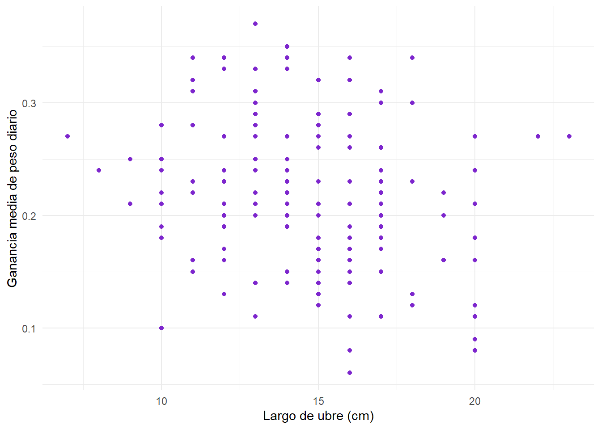

#Numericas discretas
num_disc <- c("CCove",
"Anchopez")
nombres_disc <- c("Condición corporal de la oveja",
"Ancho del pezón (cm)")
#Diagrama de barras
for (i in 1:length(num_disc)) {
graficos <- ggplot(datos_preparto,
aes(x = factor(.data[[num_disc[i]]]))) +
geom_bar(fill = "#e34f6f",
color = "white",
alpha = 0.8) +
theme_minimal() +
xlab(nombres_disc[i]) +
ylab("Frecuencia")
print(graficos)
}

Medidas de resumen
datos_preparto |>
dplyr::select(all_of( c("Gainseñal", num_vars) )) |>
pivot_longer(
everything(),
names_to = "Variable",
values_to = "Valor"
) |>
group_by(Variable) |>
summarise(
Media = mean(Valor),
Mediana = median(Valor),
Desvio = sd(Valor),
Minimo = min(Valor),
Maximo = max(Valor)
) |>
kable(digits = 2)| Variable | Media | Mediana | Desvio | Minimo | Maximo |
|---|---|---|---|---|---|
| Anchopez | 1.30 | 1.50 | 0.25 | 0.70 | 2.00 |
| Ancubre | 17.98 | 18.00 | 2.97 | 12.00 | 25.00 |
| CCove | 2.94 | 3.00 | 0.33 | 2.00 | 3.50 |
| Gainseñal | 0.22 | 0.22 | 0.06 | 0.06 | 0.37 |
| Lagubre | 14.40 | 14.00 | 2.98 | 7.00 | 23.00 |
| Largopez | 2.91 | 3.00 | 0.54 | 1.50 | 4.75 |
| Pesove | 54.45 | 55.00 | 4.80 | 43.00 | 67.00 |
#PONER GAIN DE PRIMERA!!!!Variables Explicativas Categóricas
#Variables categóricas
#HACER EN % Y PANELADO (CREO Q CON UN PIVOT LONGER)
for (i in 1:length(cat_vars)) {
graficos <- ggplot(datos_preparto, aes(x= .data[[cat_vars[i]]],
fill = .data[[cat_vars[i]]])) +
geom_bar() +
theme_minimal() +
xlab(nombres_cat[i]) +
theme(legend.position = "none") +
scale_fill_carto_d(palette = "SunsetDark",
type = "qualitative",
name = nombres_cat[i])
print(graficos)
} 


Análisis Bivariado (relaciones)
Variables Explicativas Numéricas y Respuesta
for (i in 1:length(num_vars)) {
graficos <- ggplot(datos_preparto,
aes(x= .data[[num_vars[i]]],
y= Gainseñal)) +
geom_point(color = "#7c1d6f") +
theme_minimal() +
xlab(nombres_num[i]) +
ylab("Ganancia media de peso diario")
print(graficos)
}
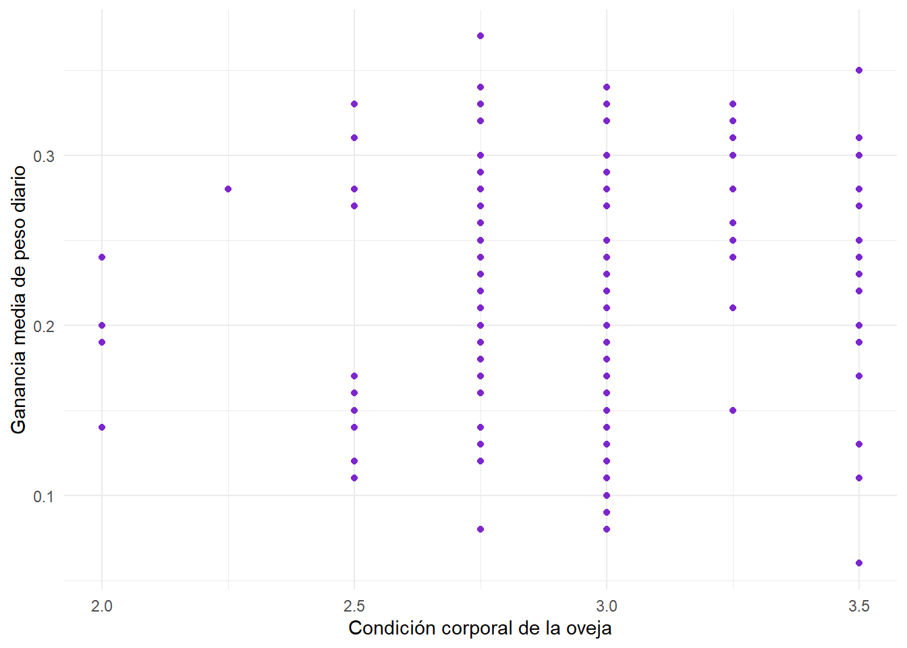

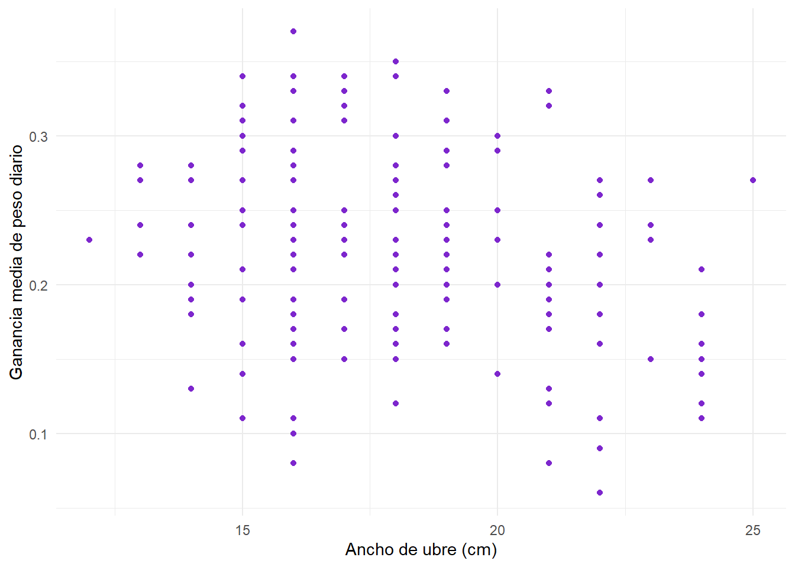
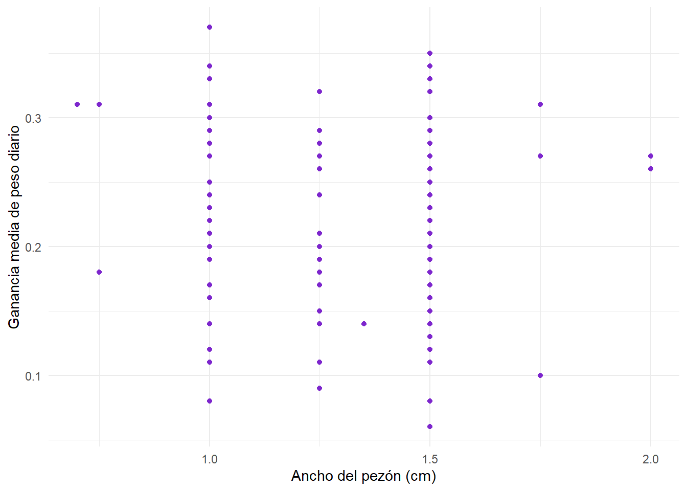
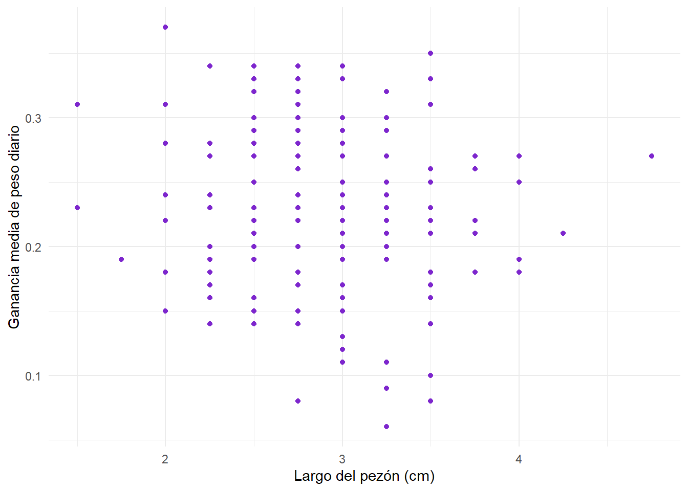
#AGREGAR RUIDO RANDOM?? Kruskal-Walliscor_m <- datos_preparto |> dplyr::select(all_of(num_vars)) |> cor(use = "complete.obs")
ggcorrplot(cor_m,
hc.order = TRUE,
lab = TRUE,
type = "lower",
lab_size = 2,
show.diag = FALSE,
colors = c("#faa476", "#FFFFFF", "#b9257a"),
outline.color = NA,
tl.cex = 10) +
labs(caption = "Fig. 6: Matriz de correlaciones entre variables numéricas",
x="", y ="") +
theme(plot.caption = element_text(size = 12,
hjust = 0.5,
margin = margin(t = 16)),
plot.caption.position = "plot") +
theme(
plot.title = element_text(face = "bold", hjust = 0.5, size = 16),
axis.text.x = element_text(angle = 90, vjust = 0.5, hjust = 1),
axis.text.y = element_text(size = 10),
legend.title = element_text(size = 10),
legend.text = element_text(size = 8),
legend.key.height = unit(0.9, "cm"),
legend.key.width = unit(0.4, "cm"),
panel.grid = element_blank()
)
det(cor_m) #no muy cero[1] 0.2055458Variables Explicativas Categóricas y Respuesta
for(i in 1:length(cat_vars)) {
g <- ggplot(datos_preparto, aes(x = .data[[cat_vars[i]]],
y = Gainseñal,
fill = .data[[cat_vars[i]]] )) +
geom_boxplot() +
ylab('Ganancia media de peso diario') +
xlab(nombres_cat[i]) +
scale_fill_manual(values = paleta) +
theme_minimal() +
theme(legend.position = "none",
axis.title.x = element_text(margin = margin(t = 20)),
axis.title.y = element_text(margin = margin(t = 20)))
print(g)
}

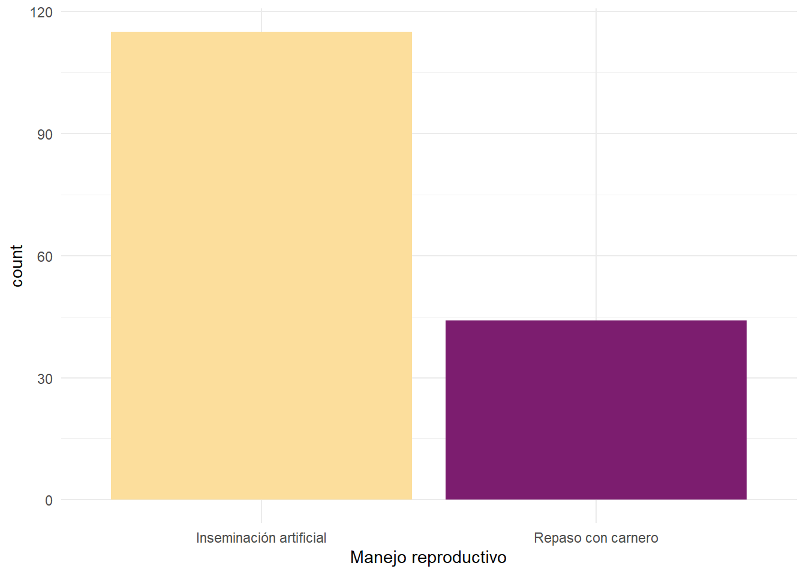
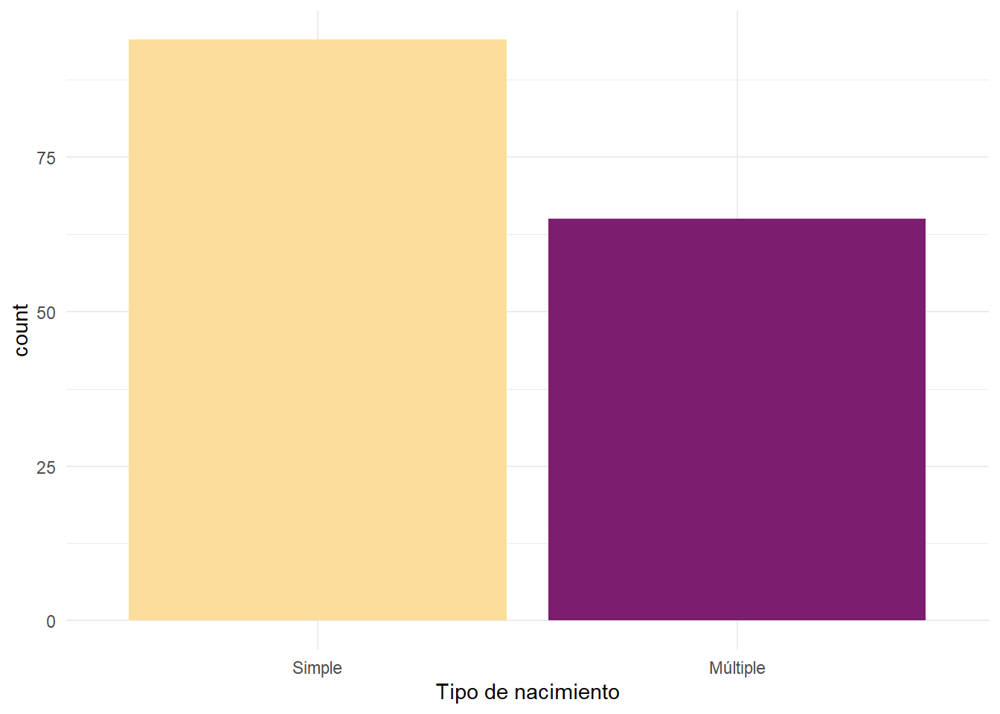
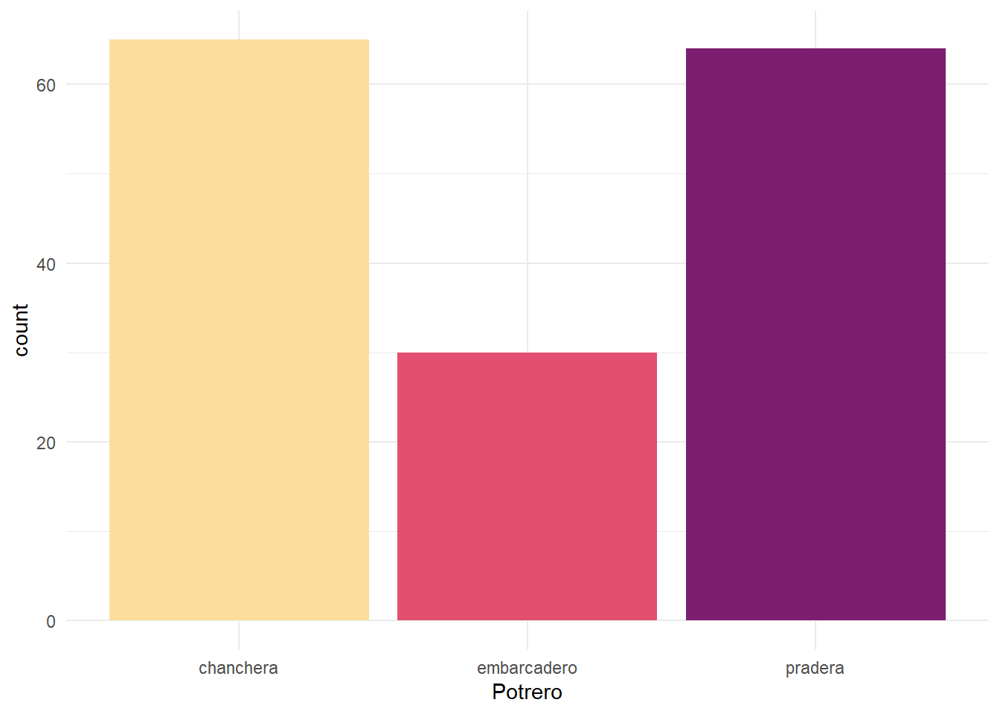
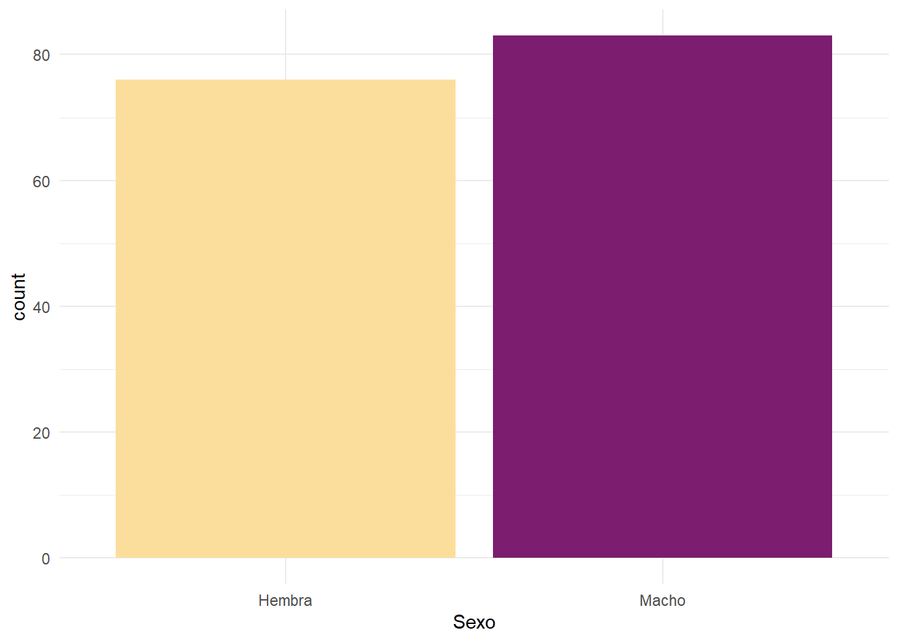

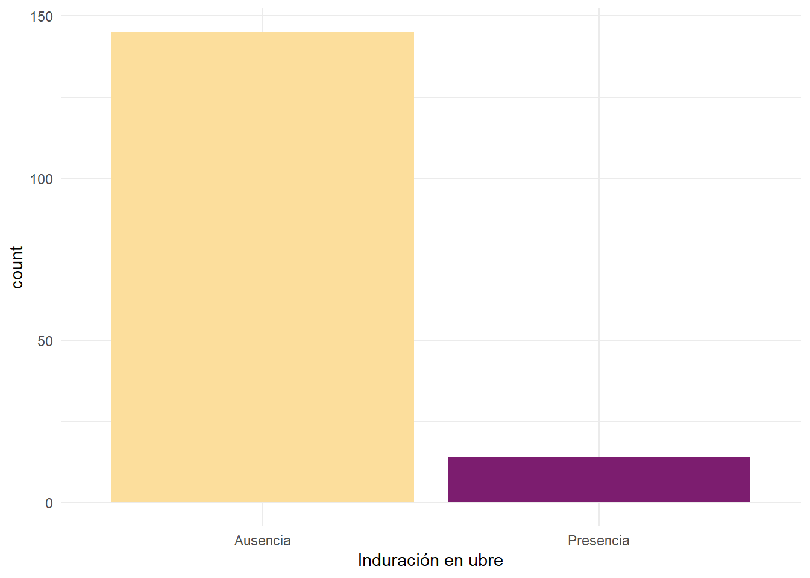
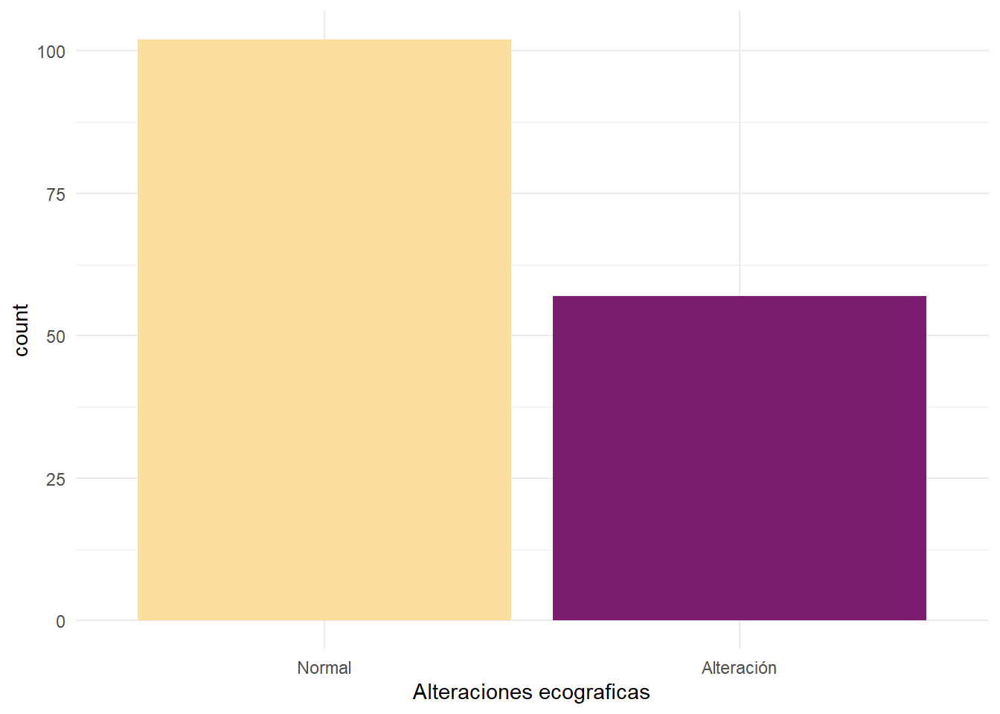


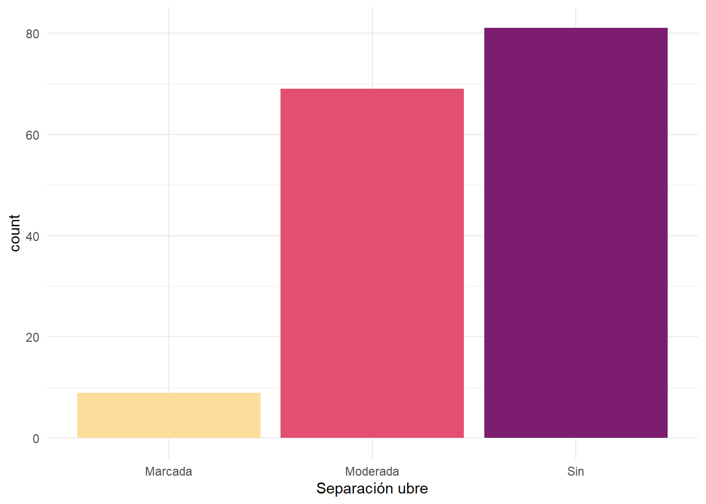
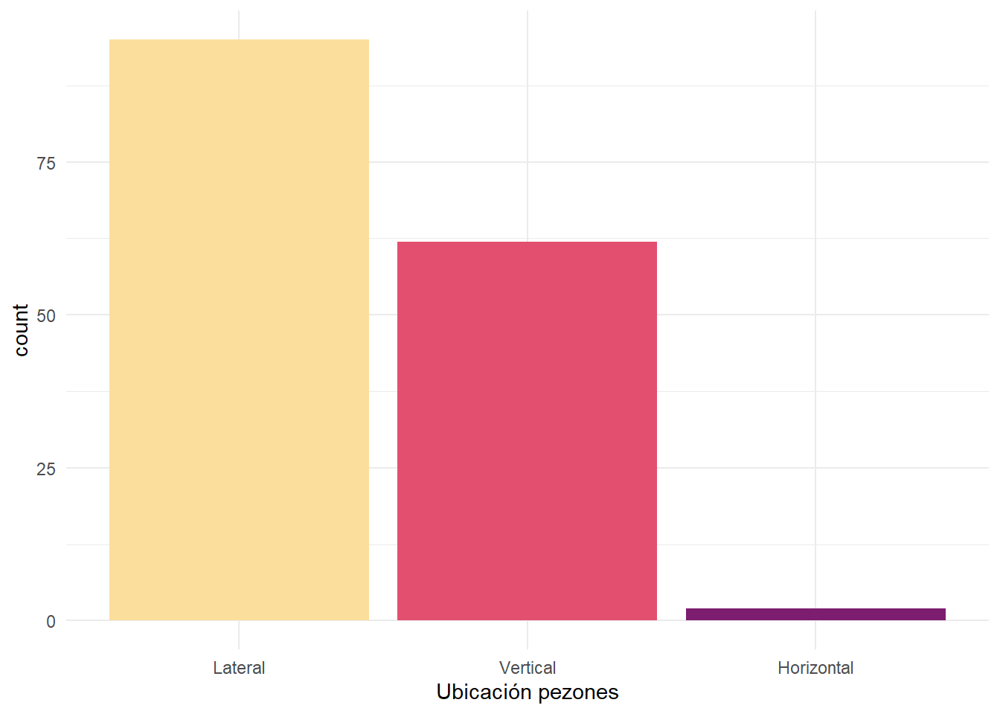

Análisis Multivariado (Interacciones)
Selección de Variables
#Primer modelo aditivo con todo
modelin <- lm(Gainseñal ~ ., data = datos_preparto)#LASSO :0
set.seed(123)
x_matrix <- model.matrix(modelin)[, -1]
y_vector <- datos_preparto$Gainseñal
group_index <- c(1,1,1,1,2,3,4,5,6,7,7,8,9,10,11,12,13,14,15,16,17,18,19,20)
cv_grpreg <- cv.grpreg(x_matrix, y_vector, group = group_index, penalty = "grLasso")
coef(cv_grpreg, s = "lambda.min") (Intercept) Edad4D Edad6D
0.23835074 0.00000000 0.00000000
EdadBL EdadDL PartosPrimipara
0.00000000 0.00000000 0.00000000
Pesove CCove LOTERepaso con carnero
0.00000000 0.00000000 0.00000000
TiponacMúltiple Potrepariembarcadero Potreparipradera
-0.03873489 0.00000000 0.00000000
SexMacho NoduPresencia InduruPresencia
0.00000000 0.00000000 0.00000000
EcoAlteración Lagubre Ancubre
0.00000000 0.00000000 0.00000000
Anchopez Largopez PeznumPresencia
0.00000000 0.00000000 0.00000000
SuspenCuadrada SeparSin UbicpezNo lateral
0.00000000 0.00000000 0.00000000
SimetNo simétrica
0.00000000 cv_grpreg$lambda.min[1] 0.01068272#probamos con otros lambdas, a ver si no se pierden tantas variables
coef(cv_grpreg, s = 0.008) (Intercept) Edad4D Edad6D
0.23835074 0.00000000 0.00000000
EdadBL EdadDL PartosPrimipara
0.00000000 0.00000000 0.00000000
Pesove CCove LOTERepaso con carnero
0.00000000 0.00000000 0.00000000
TiponacMúltiple Potrepariembarcadero Potreparipradera
-0.03873489 0.00000000 0.00000000
SexMacho NoduPresencia InduruPresencia
0.00000000 0.00000000 0.00000000
EcoAlteración Lagubre Ancubre
0.00000000 0.00000000 0.00000000
Anchopez Largopez PeznumPresencia
0.00000000 0.00000000 0.00000000
SuspenCuadrada SeparSin UbicpezNo lateral
0.00000000 0.00000000 0.00000000
SimetNo simétrica
0.00000000 coef(cv_grpreg, s = 0.007) (Intercept) Edad4D Edad6D
0.23835074 0.00000000 0.00000000
EdadBL EdadDL PartosPrimipara
0.00000000 0.00000000 0.00000000
Pesove CCove LOTERepaso con carnero
0.00000000 0.00000000 0.00000000
TiponacMúltiple Potrepariembarcadero Potreparipradera
-0.03873489 0.00000000 0.00000000
SexMacho NoduPresencia InduruPresencia
0.00000000 0.00000000 0.00000000
EcoAlteración Lagubre Ancubre
0.00000000 0.00000000 0.00000000
Anchopez Largopez PeznumPresencia
0.00000000 0.00000000 0.00000000
SuspenCuadrada SeparSin UbicpezNo lateral
0.00000000 0.00000000 0.00000000
SimetNo simétrica
0.00000000 coef(cv_grpreg, s = 0.006) (Intercept) Edad4D Edad6D
0.23835074 0.00000000 0.00000000
EdadBL EdadDL PartosPrimipara
0.00000000 0.00000000 0.00000000
Pesove CCove LOTERepaso con carnero
0.00000000 0.00000000 0.00000000
TiponacMúltiple Potrepariembarcadero Potreparipradera
-0.03873489 0.00000000 0.00000000
SexMacho NoduPresencia InduruPresencia
0.00000000 0.00000000 0.00000000
EcoAlteración Lagubre Ancubre
0.00000000 0.00000000 0.00000000
Anchopez Largopez PeznumPresencia
0.00000000 0.00000000 0.00000000
SuspenCuadrada SeparSin UbicpezNo lateral
0.00000000 0.00000000 0.00000000
SimetNo simétrica
0.00000000 coef(cv_grpreg, s = 0.005) (Intercept) Edad4D Edad6D
0.23835074 0.00000000 0.00000000
EdadBL EdadDL PartosPrimipara
0.00000000 0.00000000 0.00000000
Pesove CCove LOTERepaso con carnero
0.00000000 0.00000000 0.00000000
TiponacMúltiple Potrepariembarcadero Potreparipradera
-0.03873489 0.00000000 0.00000000
SexMacho NoduPresencia InduruPresencia
0.00000000 0.00000000 0.00000000
EcoAlteración Lagubre Ancubre
0.00000000 0.00000000 0.00000000
Anchopez Largopez PeznumPresencia
0.00000000 0.00000000 0.00000000
SuspenCuadrada SeparSin UbicpezNo lateral
0.00000000 0.00000000 0.00000000
SimetNo simétrica
0.00000000 coef(cv_grpreg, s = 0.004) (Intercept) Edad4D Edad6D
0.23835074 0.00000000 0.00000000
EdadBL EdadDL PartosPrimipara
0.00000000 0.00000000 0.00000000
Pesove CCove LOTERepaso con carnero
0.00000000 0.00000000 0.00000000
TiponacMúltiple Potrepariembarcadero Potreparipradera
-0.03873489 0.00000000 0.00000000
SexMacho NoduPresencia InduruPresencia
0.00000000 0.00000000 0.00000000
EcoAlteración Lagubre Ancubre
0.00000000 0.00000000 0.00000000
Anchopez Largopez PeznumPresencia
0.00000000 0.00000000 0.00000000
SuspenCuadrada SeparSin UbicpezNo lateral
0.00000000 0.00000000 0.00000000
SimetNo simétrica
0.00000000 coef(cv_grpreg, s = 0.003) (Intercept) Edad4D Edad6D
0.23835074 0.00000000 0.00000000
EdadBL EdadDL PartosPrimipara
0.00000000 0.00000000 0.00000000
Pesove CCove LOTERepaso con carnero
0.00000000 0.00000000 0.00000000
TiponacMúltiple Potrepariembarcadero Potreparipradera
-0.03873489 0.00000000 0.00000000
SexMacho NoduPresencia InduruPresencia
0.00000000 0.00000000 0.00000000
EcoAlteración Lagubre Ancubre
0.00000000 0.00000000 0.00000000
Anchopez Largopez PeznumPresencia
0.00000000 0.00000000 0.00000000
SuspenCuadrada SeparSin UbicpezNo lateral
0.00000000 0.00000000 0.00000000
SimetNo simétrica
0.00000000 coef(cv_grpreg, s = 0.002) (Intercept) Edad4D Edad6D
0.23835074 0.00000000 0.00000000
EdadBL EdadDL PartosPrimipara
0.00000000 0.00000000 0.00000000
Pesove CCove LOTERepaso con carnero
0.00000000 0.00000000 0.00000000
TiponacMúltiple Potrepariembarcadero Potreparipradera
-0.03873489 0.00000000 0.00000000
SexMacho NoduPresencia InduruPresencia
0.00000000 0.00000000 0.00000000
EcoAlteración Lagubre Ancubre
0.00000000 0.00000000 0.00000000
Anchopez Largopez PeznumPresencia
0.00000000 0.00000000 0.00000000
SuspenCuadrada SeparSin UbicpezNo lateral
0.00000000 0.00000000 0.00000000
SimetNo simétrica
0.00000000 coef(cv_grpreg, s = 0.001) (Intercept) Edad4D Edad6D
0.23835074 0.00000000 0.00000000
EdadBL EdadDL PartosPrimipara
0.00000000 0.00000000 0.00000000
Pesove CCove LOTERepaso con carnero
0.00000000 0.00000000 0.00000000
TiponacMúltiple Potrepariembarcadero Potreparipradera
-0.03873489 0.00000000 0.00000000
SexMacho NoduPresencia InduruPresencia
0.00000000 0.00000000 0.00000000
EcoAlteración Lagubre Ancubre
0.00000000 0.00000000 0.00000000
Anchopez Largopez PeznumPresencia
0.00000000 0.00000000 0.00000000
SuspenCuadrada SeparSin UbicpezNo lateral
0.00000000 0.00000000 0.00000000
SimetNo simétrica
0.00000000 coef(cv_grpreg, s = 1e-4) (Intercept) Edad4D Edad6D
0.23835074 0.00000000 0.00000000
EdadBL EdadDL PartosPrimipara
0.00000000 0.00000000 0.00000000
Pesove CCove LOTERepaso con carnero
0.00000000 0.00000000 0.00000000
TiponacMúltiple Potrepariembarcadero Potreparipradera
-0.03873489 0.00000000 0.00000000
SexMacho NoduPresencia InduruPresencia
0.00000000 0.00000000 0.00000000
EcoAlteración Lagubre Ancubre
0.00000000 0.00000000 0.00000000
Anchopez Largopez PeznumPresencia
0.00000000 0.00000000 0.00000000
SuspenCuadrada SeparSin UbicpezNo lateral
0.00000000 0.00000000 0.00000000
SimetNo simétrica
0.00000000 coef(cv_grpreg, s = 1e-5) (Intercept) Edad4D Edad6D
0.23835074 0.00000000 0.00000000
EdadBL EdadDL PartosPrimipara
0.00000000 0.00000000 0.00000000
Pesove CCove LOTERepaso con carnero
0.00000000 0.00000000 0.00000000
TiponacMúltiple Potrepariembarcadero Potreparipradera
-0.03873489 0.00000000 0.00000000
SexMacho NoduPresencia InduruPresencia
0.00000000 0.00000000 0.00000000
EcoAlteración Lagubre Ancubre
0.00000000 0.00000000 0.00000000
Anchopez Largopez PeznumPresencia
0.00000000 0.00000000 0.00000000
SuspenCuadrada SeparSin UbicpezNo lateral
0.00000000 0.00000000 0.00000000
SimetNo simétrica
0.00000000 #con este seed solo queda tiponac
#GRÁFICOS
#ECM de validaciones cruzadas para valores de log de lambda
plot(cv_grpreg)
cv <- data.frame(
lambda = cv_grpreg$lambda,
ecm = cv_grpreg$cve
)
#ECM de validaciones cruzadas para valores de lambda
cv|>
ggplot(aes(x = lambda, y = ecm)) +
geom_line(color = "red") +
theme_minimal() +
geom_vline(xintercept = cv_grpreg$lambda.min,
linetype = "dashed",
color = "blue")
betas <- cv_grpreg$fit$beta[-1, ]
lambda <- cv_grpreg$lambda
df <- data.frame(lambda = lambda, t(betas))
df_long <- df |>
pivot_longer(
cols = -lambda,
names_to = "variable",
values_to = "valor"
)
#Valores de beta para distintos valores de lambda según variables
df_labels <- df_long |>
group_by(variable) |>
slice_tail(n = 1)
ggplot(df_long,
aes(x = lambda,
y = valor,
color = variable)) +
geom_line() +
geom_hline(yintercept = 0) +
theme_bw() +
labs(y = "beta") 
#+
# geom_text_repel(data = df_labels,
# aes(label = variable),
# direction = "y",
# nudge_x = 0.02 * diff(range(df_long$lambda)),
# box.padding = 0.4,
# point.padding = 0.2,
# segment.color = "grey50",
# show.legend = FALSE)
#Quise ponerles etiquetas para poder distinguirlas mejor en el grafico pero son demasiadas. Por lo menos se puede ver que Tiponac es la que llega ultima a un beta=0, o sea, necesita valores mas grandes de lambda para que LASSO no la seleccione. Para el resto es bastante dificil identificarlasSERIAMENTE PENSANDO USAR EL BACKWARD NOMAS
#Por alta cantidad de variables --> no ajustar todos los modelos posibles
#Metodo basado en log verosimilitud // criterios de informacion
#VA A EXPLOTAR TODO
modelo_aic <- step(modelin, trace=0)
modelo_bic <- step(modelin,
k=log(nrow(datos_preparto)),
trace=0)
names(coef(modelo_aic)) [1] "(Intercept)" "Edad4D" "Edad6D"
[4] "EdadBL" "EdadDL" "Pesove"
[7] "CCove" "LOTERepaso con carnero" "TiponacMúltiple"
[10] "SexMacho" "SimetNo simétrica" names(coef(modelo_bic))[1] "(Intercept)" "Pesove" "TiponacMúltiple"#ESTO NS QUE HACE
AIC(modelo_aic)[1] -458.9339BIC(modelo_aic)[1] -422.1071AIC(modelo_bic)[1] -455.1268BIC(modelo_bic)[1] -442.8512df <- data.frame(
Modelo = c("AIC", "BIC"),
AIC = c(AIC(modelo_aic), AIC(modelo_bic)),
BIC = c(BIC(modelo_aic), BIC(modelo_bic))
)
#QUEDARNOS LAS QUE QUEDEN EN AL MENOS UNO??Diagnóstico
Multicolinealidad
#Factores de inflacion de varianza
#GVIF ajustado por tener variables categoricas
modelin <- lm(Gainseñal ~ ., data = datos_preparto)
vif(modelin) GVIF Df GVIF^(1/(2*Df))
Edad 9.881352 4 1.331533
Partos 3.844822 1 1.960822
Pesove 1.942633 1 1.393784
CCove 1.833381 1 1.354024
LOTE 3.867949 1 1.966710
Tiponac 6.526611 1 2.554723
Potrepari 28.996462 2 2.320525
Sex 1.153976 1 1.074233
Nodu 1.183354 1 1.087821
Induru 1.212615 1 1.101188
Eco 1.333619 1 1.154824
Lagubre 4.038381 1 2.009572
Ancubre 3.395280 1 1.842629
Anchopez 2.180651 1 1.476703
Largopez 2.039741 1 1.428195
Peznum 1.312710 1 1.145736
Suspen 1.369049 1 1.170064
Separ 1.226074 1 1.107282
Ubicpez 1.304069 1 1.141958
Simet 1.344161 1 1.159380#df
ncol(model.matrix(modelin)) - 1[1] 24#PREGUNTAR
#KAPPA
X <- model.matrix(modelin) #OJO ESTA MATRIZ TIENE INTERCEPTO
XTX <- t(X)%*%X
lambdaX <- eigen(XTX)$values
#nume de condicion
KA <- sqrt(max(lambdaX)/min(lambdaX))
KA #1504.954[1] 1063.019#PROBLEMAS POR VARIABLES CATEGORICAS???
#PREGUNTAR A CHAT ANormalidad
#normalidad
residuos <- rstudent(modelin)
n <- nrow(datos_preparto)
z_i <- qnorm(seq(n)/(n+1))
qq <- data.frame(teoricos = z_i,
empiricos = sort(residuos))
#qqplot
qq |> ggplot(aes(sample = empiricos)) +
stat_qq_band(fill = 2) +
stat_qq_line(col = 2) +
stat_qq_point() +
xlab("Cuantiles teoricos")+
ylab("Cuantiles empiricos")
#PdH
# H0) Los errores son normales
# H1) Los errores NO son normales
shapiro.test(residuos)
Shapiro-Wilk normality test
data: residuos
W = 0.9933, p-value = 0.6751ks.test(residuos, 'pnorm')
Asymptotic one-sample Kolmogorov-Smirnov test
data: residuos
D = 0.041522, p-value = 0.9468
alternative hypothesis: two-sided#todo indica que los errores son NORMALES Linealidad
datos_preparto$pred <- fitted(modelin)
datos_preparto$residuos <- residuals(modelin)
for(i in num_vars2){
crPlot(modelin, variable = i, pch = 16)
}


Homoscedasticidad
#residuos vs predichos
datos_preparto$t_i <- residuos #studentizados
ggplot(datos_preparto,
aes(x = fitted(modelin),
y = residuos)) +
geom_point(color = "#b9257a",
size = 1.5,
alpha = 0.75) +
geom_hline(yintercept = 0,
color = "black",
linetype = 2) +
xlab("Valores ajustados") +
ylab("Residuos studentizados")
#residuos vs x_j num
for(i in 1:length(num_vars2)) {
g <- ggplot(datos_preparto,
aes(x = .data[[num_vars2[i]]],
y = residuos)) +
geom_point(color = "#b9257a",
size = 1.5,
alpha = 0.75) +
geom_hline(yintercept = 0,
color = "black",
linetype = 2) +
theme_minimal() +
xlab(num_vars2[i]) +
ylab("Residuos studentizados")
print(g)
}


#residuos vs x_j cat
for(i in 1:length(cat_vars)) {
g <- ggplot(datos_preparto,
aes(x = .data[[cat_vars[i]]],
y = residuos)) +
geom_boxplot(fill = "#dc3977") +
theme_minimal() +
xlab(nombres_cat[i]) +
ylab("Residuos studentizados")
print(g)
} 


#Test de hipotesis
# H0) E(eps^2_i) = sigma^2
# H1) E(eps^2_i) = sigma^2 * h(X_1, X_2, ..., X_k)
breusch_pagan(modelin)# A tibble: 1 × 5
statistic p.value parameter method alternative
<dbl> <dbl> <dbl> <chr> <chr>
1 29.4 0.207 24 Koenker (studentised) greater Datos atipicos/influyentes
#atipicos
df_res <- data.frame(
i = 1:length(residuos),
t_i = residuos
)
ggplot(df_res,
aes(x = i, y = t_i)) +
geom_point(
color = "#b9257a",
size = 1.5,
alpha = 0.8
) +
geom_hline(
yintercept = c(-2, 2),
color = "#faa476",
linetype = "dashed",
linewidth = 0.8
) +
geom_hline(
yintercept = 0,
color = "grey50"
) +
theme_classic() +
labs(
x = "Observación",
y = "Residuo studentizado"
) +
theme(
text = element_text(size = 12)
)
# medidas de influencia
h_i <- influence(modelin)$hat
df <- data.frame(
i = 1:nrow(datos_preparto),
h_i = h_i
)# Distancia de Cook
D_i <- cooks.distance(modelin)
df$D_i <- D_i
corte_cook <- 4/nrow(datos_preparto)
df$influyente <- df$D_i > corte_cook
ggplot(df, aes(x = i, y = D_i)) +
geom_segment(
aes(xend = i,
y = 0,
yend = D_i),
color = "grey80"
) +
geom_point(
aes(color = influyente),
size = 1
) +
geom_hline(
yintercept = corte_cook,
color = "black",
linetype = "dashed"
) +
scale_color_manual(
values = c("#b9257a", "#faa476"),
labels = c("No influyente", "Potencialmente influyente"),
name = ""
) +
labs(
x = "Observación",
y = "Distancia de Cook",
) +
theme_classic() +
theme(
legend.position = "bottom",
text = element_text(size = 12)
)
#Observaciones con alto leverage
which(h_i > 0.352) 43 96 111 117 121 127 140
43 96 111 117 121 127 140 #Observaciones influyentes según Distancia de Cook
which(D_i > 0.0252) 1 6 15 42 43 48 52 58 78 83 96 106 121 123 157
1 6 15 42 43 48 52 58 78 83 96 106 121 123 157 #Observaciones atipicas
which(abs(rstudent(modelin)) > 2) 15 42 43 46 52 58 78 83 123 157
15 42 43 46 52 58 78 83 123 157 #43 aparece en las tres, principal observacion influyente, evaluarSignificaciones del Primer modelo
#primer modelo para ver significacion de las variables
summary(modelin)
Call:
lm(formula = Gainseñal ~ ., data = datos_preparto)
Residuals:
Min 1Q Median 3Q Max
-0.132440 -0.032370 -0.003644 0.035304 0.143799
Coefficients:
Estimate Std. Error t value Pr(>|t|)
(Intercept) 0.1937826 0.0783285 2.474 0.0146 *
Edad4D 0.0237559 0.0245381 0.968 0.3347
Edad6D -0.0116552 0.0248964 -0.468 0.6404
EdadBL -0.0203737 0.0284070 -0.717 0.4745
EdadDL 0.0245779 0.0369053 0.666 0.5066
PartosPrimipara 0.0055846 0.0197720 0.282 0.7780
Pesove 0.0027564 0.0013136 2.098 0.0378 *
CCove -0.0317805 0.0183977 -1.727 0.0864 .
LOTERepaso con carnero -0.0070588 0.0198314 -0.356 0.7224
TiponacMúltiple -0.0475828 0.0234429 -2.030 0.0444 *
Potrepariembarcadero -0.0143970 0.0251616 -0.572 0.5682
Potreparipradera -0.0133527 0.0248669 -0.537 0.5922
SexMacho 0.0176435 0.0097015 1.819 0.0712 .
NoduPresencia -0.0154605 0.0281190 -0.550 0.5834
InduruPresencia 0.0146513 0.0175308 0.836 0.4048
EcoAlteración 0.0116777 0.0108634 1.075 0.2843
Lagubre -0.0014997 0.0030549 -0.491 0.6243
Ancubre 0.0003469 0.0028044 0.124 0.9017
Anchopez -0.0105069 0.0263599 -0.399 0.6908
Largopez 0.0086982 0.0120659 0.721 0.4722
PeznumPresencia 0.0052665 0.0104896 0.502 0.6164
SuspenCuadrada -0.0069016 0.0124915 -0.553 0.5815
SeparSin 0.0026972 0.0099921 0.270 0.7876
UbicpezNo lateral 0.0016987 0.0105048 0.162 0.8718
SimetNo simétrica -0.0430929 0.0299687 -1.438 0.1528
---
Signif. codes: 0 '***' 0.001 '**' 0.01 '*' 0.05 '.' 0.1 ' ' 1
Residual standard error: 0.05688 on 134 degrees of freedom
Multiple R-squared: 0.3472, Adjusted R-squared: 0.2303
F-statistic: 2.969 on 24 and 134 DF, p-value: 3.783e-05Anova(modelin) #que hace?Anova Table (Type II tests)
Response: Gainseñal
Sum Sq Df F value Pr(>F)
Edad 0.02359 4 1.8224 0.12813
Partos 0.00026 1 0.0798 0.77803
Pesove 0.01425 1 4.4027 0.03776 *
CCove 0.00966 1 2.9840 0.08640 .
LOTE 0.00041 1 0.1267 0.72244
Tiponac 0.01333 1 4.1198 0.04436 *
Potrepari 0.00180 2 0.2776 0.75807
Sex 0.01070 1 3.3074 0.07120 .
Nodu 0.00098 1 0.3023 0.58335
Induru 0.00226 1 0.6985 0.40478
Eco 0.00374 1 1.1555 0.28432
Lagubre 0.00078 1 0.2410 0.62428
Ancubre 0.00005 1 0.0153 0.90174
Anchopez 0.00051 1 0.1589 0.69083
Largopez 0.00168 1 0.5197 0.47223
Peznum 0.00082 1 0.2521 0.61644
Suspen 0.00099 1 0.3053 0.58153
Separ 0.00024 1 0.0729 0.78763
Ubicpez 0.00008 1 0.0262 0.87178
Simet 0.00669 1 2.0676 0.15279
Residuals 0.43359 134
---
Signif. codes: 0 '***' 0.001 '**' 0.01 '*' 0.05 '.' 0.1 ' ' 1#ajustamos modelo segun variables significativas al 10%? re elegir
modelo <- lm(
Gainseñal ~ Pesove + Tiponac + Sex + CCove,
data = datos_preparto
)
summary(modelo)
Call:
lm(formula = Gainseñal ~ Pesove + Tiponac + Sex + CCove, data = datos_preparto)
Residuals:
Min 1Q Median 3Q Max
-0.130807 -0.032446 -0.000837 0.038875 0.127460
Coefficients:
Estimate Std. Error t value Pr(>|t|)
(Intercept) 0.163665 0.061987 2.640 0.00914 **
Pesove 0.002690 0.001057 2.546 0.01189 *
TiponacMúltiple -0.073238 0.010685 -6.854 1.62e-10 ***
SexMacho 0.014229 0.009190 1.548 0.12361
CCove -0.022181 0.014727 -1.506 0.13408
---
Signif. codes: 0 '***' 0.001 '**' 0.01 '*' 0.05 '.' 0.1 ' ' 1
Residual standard error: 0.05657 on 154 degrees of freedom
Multiple R-squared: 0.2581, Adjusted R-squared: 0.2388
F-statistic: 13.39 on 4 and 154 DF, p-value: 2.166e-09Anova(modelo)Anova Table (Type II tests)
Response: Gainseñal
Sum Sq Df F value Pr(>F)
Pesove 0.02074 1 6.4806 0.01189 *
Tiponac 0.15032 1 46.9803 1.624e-10 ***
Sex 0.00767 1 2.3972 0.12361
CCove 0.00726 1 2.2685 0.13408
Residuals 0.49276 154
---
Signif. codes: 0 '***' 0.001 '**' 0.01 '*' 0.05 '.' 0.1 ' ' 1PREDICCIONES
df <- data.frame(
Pesove = mean(datos_preparto$Pesove),
Tiponac = factor("Múltiple",
levels = levels(datos_preparto$Tiponac))
)
predict(modelo_3,
newdata = df,
interval = "confidence",
level = 0.95)